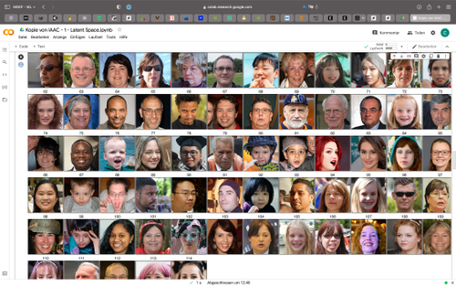
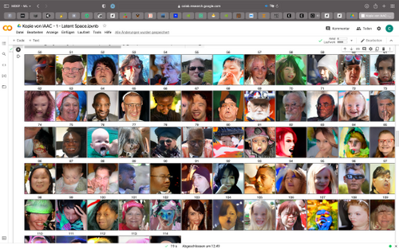
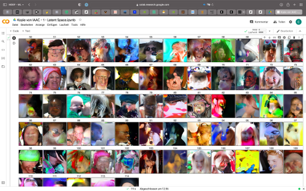

07Extended Intelligences
Extended Inteligences 1.0
30 November 2021
Broadening our understanding of extended intelligences and AI, we explored the meaning of Intelligence with the team from Taller Estampa who are a collective of researchers, programmers and creatives in the film industry.
The seminar began with the questioning of the meaning of AI and the meaning of intelligence. In anthropo-mising technology, we questioned “what does it mean to be able to think”
Throughout the seminar we learnt aspects of collecting dataset, clustering its content and modifying pre-trained image generating networks through the latent space. During the seminar, I grew an interest in exploring trained sets and generating images for creativity, and speculation. I learnt how to use Colab; a tool developed by Google to run programs locally on my computer using remote GPUs and TPUs.Exploration 1: Poblenou Old and New
We were tasked to collect 100 images from Poblenou surrounds and images from our phone. Using a trained neural network from Estampa, it was intriguing to see the images that were grouped as similar and those that were not

Exploration 2: Navigating the Latent Space
Using Colab, we downloaded the neural network from GitHub that incorporated Stylegan2-ADA and Clip to generate faces comparing ones that are similar. Using sliders we could manipulate the output and the direction of the latent space. An example us the truction PSI regulating how the latent space uses randomises or specifies the similarity of images.
  

Exploration 3: Vclip
The team at Estampa introduced us to several platforms for image generation using AI. I used a text based VQGAN and CLIP to generate a few gifs I later turned into a project titled “Art-ful Intelligences”.


Speculative Project: Universal Declaration of Ant’s Rights
At the End of the week, we were prompted to create speculative project. Using Open AI’s GPT3 language learning platform. The project’s objective was to us the UN’s Universal Declaration of Human Rights for an animal species, optimally for one that we as humans easily disregard. This, so the concept, could be a way to provoke, to empathize and to ultimately propose an entry point for interspecies legal frameworks. Methodology: Using the GPT-3 playground as a base, after some experimentation we set the parameters as follows: Top P(1), Freq. Penalty (0), Presence Penalty (0,5), Best Of (3).


View the end result and sign the declaration here https://antrights.com/
Extended Intelligences 2.0
07 December 2021
What is the class about?
Building on the very tactical explorations from the previous week. This week we explored the Affordances of different types of AI, understanding AI as a system of scale and the issues of ethics in AI. Here are some Ideas and reflections that stood out to me.
Ideas about Intelligence and Neural Networks
Processes of how neurons synthesize information are very unknown , how the functioning of the system happens beyond our understanding. Ideas of tech as a black box, where intention is needed when training the data , for the output Meaning of choosing , and the affordances of what we can actually do, Meta meaning and how this can transfer into my practise.
What does intelligence mean?
Understanding the complexity inside the system.Addressing ideas of intelligence:
- Widing the narrow highway of affordances
- Increasing or decreasing the number of outputs
- There is no right / wrong way to map intelligence, but the best way is to show how you mapped out your findings ( the allegory of the cave)
- If we cant define it, how do we make it?
- Symbol grounding- representation describing the content of “how something works” however, computers are not like that. Our brains are able to make patterns and adapt.
- Concepts of scaling the Turing test as humans understanding and telling the difference between computer and human.
- As humans we ascribe certain behaviours and intentions within human interactions. The description of intentionality, begs the question of the replicating human intelligence. Most generalizable ( the brain) - the brain being replicated into notions of neural networks.
- Notions of animal systems and forms of communication and linguistics, expansion of a very specific function, and getting to know it well.
Humans are complex beings that use symbols to communicate ideas, which is difficult to transfer into computers. Many problems we have with AI are trained with abstract rules that exacerbate issues of safety fairness justice and discrimination.
Open AI GPT-3
Having new examples as training models to generate eg: writing your own language and feeding this new nonsense to predict new nonsense. GPT-3 was trained using by lots of data of text input as a training model Question of value of AI to write emails in context. Why is it cool? GPT-3 similar to an aministic approach, in its coding it was fed a variety of data through text and was not taught, but learns how translate and use natural language after seeing a lot code Ideas from which data where you are training your data sets, AT&T and Telefonia. Ethics inspiring new laws of the AI landscape, and the data they use to train their models
Speculative Design Project
After diverging into themes of ethics in AI and the meaning of Intelligence, we were given a task to speculate an intelligent invention using a series of matrixes to understand the various problems that could arise from designing an intelligent system. In the group I was part of, we designed a soft robotics wearable ring to alleviate anxiety in our current world of COVID -19 anxiety. Understanding that many have the need to relieve anxiety in social situations ( such as airports, parties and other crowded places) - we wrote scenarios and profiled potential users to map various values, ethical issues.
Objective: A smart wearable ring that small wearable that helps alleviate anxiety and warns your close community.
Input data: ECG, Fidgeting detection, body temperature, noise detection ( measure crowds and people), location
Features: LOCATING SAFE SPACES,ANXIETY DETECTION, IMPACT DETECTION, MESSAGE SUPPORT, FIDGET-ABILITY
Ethics and conclusion: This product used for alleviating anxiety could be a “quick fix” and not a permanent psychological and physical solution. This brings questions of potential dependency. Furthemore, information and data from the users can be exploited for business interests.